LPC 2026 调度与实时议题分析
数据来源：/home/zq/code/lpc/2026/ 下 24 个有 PDF 的调度相关议题（Scheduler & Real-Time MC 9 场 + sched_ext MC 5 场 + 散落各专场 10 场）。每场按「背景 & 问题 & 场景 / 方案思路 / 效果」组织，引用幻灯片中的关键代码与原始数据；方案图直接由讲者幻灯片渲染嵌入（150 DPI）。选图为启发式（文本/图像密度）+ OCR 校验，图注来自幻灯片标题——如需增删某张图，指明场次与 slide 编号即可替换。
① 锁驱动的时延是贯穿主线
Proxy Futexes（内核锁→用户锁）、LAVD LHP/LWP（游戏与 VR）、Meta 机群锁监控——三场独立讲题都在解决「锁持有者/等待者没被及时调度」。
② sched_ext 走向生产化
Qualcomm 把 Android 帧路径 RT 任务搬进 sched_ext、pvsched 打通 VM 边界、scx-cosmos 做 GPU 放置、PE 以 opt-in 方式兼容——从实验特性走向 Android/云生产环境。
③ 平台厂商带着数据进场
Qualcomm 游戏实测表、Meta 28 天 4160 万份锁报告、Google Pixel 9 拉丁方实验、NVIDIA +67% 带宽、Steam Deck 帧尾数据——几乎每场都有一手测量。
总览与议程
Scheduler & Real-Time MC（单日议程，来自 kickoff 幻灯片）：10:00 Introduction → 10:02 nohz_full/managed_irq 运行时化（Waiman Long）→ 10:24 Proxy Enabled Futexes（Google）→ 10:46 PREEMPT_RT 接口事件（Siemens）→ 11:08 timerlat vs cyclictest（Red Hat）→ 12:00 Remaining EEVDF latency and lag（Vincent Guittot）→ 12:22 Kernel Sched QoS Interface（Qais Yousef）→ 12:44 EAS on x86 Hybrid: Latency & Idle CPU Selection（Ricardo Neri）→ 13:06 sparsemask（K Prateek Nayak）→ 13:28 Wrap-up。
sched_ext MC：pvsched 跨 VM 透传（Google）→ BPF 可组合 idle cpumask（无 PDF）→ LAVD LHP/LWP（Igalia）→ Making proxy execution compatible with sched_ext（NVIDIA/Google）→ LAVD stickiness（Igalia）→ HFI plug-in（无 PDF）→ scx-cosmos 加速器放置（NVIDIA）。
散落各专场：RT in sched-ext（Qualcomm）、GPU Job Scheduling（Collabora/Red Hat）、Amortizing CPU Wakeup Costs（Google）、HW Pressure on x86（Ricardo Neri）、Idle-State Exit Latency 预测（Qualcomm）、CPPC hw_autonomous governor（NVIDIA）、长期延迟监测（OSADL）、机群隔离观测（Meta）、轻量 RT tracepoints（Red Hat）、EPP-boost 游戏调速（Anthropic）。
与 LKML 的衔接：多场讲题对应正在评审的系列——EEVDF 场即 10 月分析里 Vincent 的 18 补丁「Improving latency of short slice tasks」的后续；sparsemask 即 SBM RFC v3；PE×sched_ext 即 Andrea Righi 的 for-7.4 系列（10 月日报持续跟踪）。
EEVDF 短任务时延的剩余问题
背景与问题
这是 10 月分析的「Improving latency of short slice tasks」18 补丁 v2（lag 衰减、min_slice 选核、fair push、EAS 整合）之后的「还剩什么」专场。Vincent 把剩余问题分成三类：
- 单任务·唤醒与 pick 的竞态：短任务唤醒会取消 protection；在
pick_next_task()之前若有更多带正 lag 的任务入队，短任务变得 ineligible。idle CPU 上唤醒时正 vlag 直接消失（没有可施加的对象）、buddy 也不设置（CPU 空闲）。 - 单任务·永恒正 lag：负 lag 可以靠延迟 dequeue 消失，正 lag 不会——长睡眠任务可以永远保有大的正 vlag，而它早已不再相关。
- 多任务：唤醒取消 protect 后
set_next_buddy，但更多短任务入队会覆盖 next buddy；同 CPU 多个短任务时「slice 并不更短、preempt short 不工作」。
方案思路（候选方向清单）
- 竞态类：「某种程度的不公平——只是排序问题，
pick_next_task()还没被调用」；在 enqueue 时检查 wakeup（对短 slice 任务值得）；idle CPU 上清 vlag 有反例——负载均衡迁移任务时不公平（prev CPU 上竞争挣来的正 vlag）。 - 正 lag：像 negative lag 一样保持任务「enqueued」；用 raw clock 做线性衰减；dequeue 时 vruntime 与 enqueue 时 avg vruntime 比较；idle CPU 触发正 lag reset（negative 侧已是如此）。
- 多任务：把任务加进 pushable list（配合 set_next_buddy——没被 pick 就找别的 CPU，正是 10 月 push 机制的延伸）；选核需要 lockless 访问 min/max slice，
select_task_rq_fair()与find_energy_efficient_cpu()都纳入 min slice——不只看能量。
开放问题
Opportunistic lag credit：任务 A 积累大正 lag → 任务 B 入队 → A 只跑几微秒就退出 → B 分到了 A 的这份正 lag——B 从未与 A 竞争，lag 却涨了。全场最锋利的一个开放问题。
调度接口与控制：Sched QoS / nohz_full 运行时化 / GPU JobQueue
Kernel Sched QoS Interface（Qais Yousef，Google）
背景：去年的 schedqos 服务能解决部分问题但非全部。目标是给调度器一个不透明、可扩展、可废弃的接口——「Change is the only constant」，避免每次需求变化都动 syscall ABI。首批目标场景：Data Dependency Tagging（为 cache-aware 调度标记数据依赖任务组）、DVFS & Upmigration Rampup Control（用 rampup_multiplier 缓解 HMP 上 DVFS 引发的上调延迟）、pipeline 级性能管理。
sched_qos_type /* 枚举：要施加哪种 QoS hint */sched_qos_value /* hint 的值 */sched_qos_cookie /* 魔数 cookie：标记一组任务。 0 = 全系统生效；非 0 = 只对同 cookie 任务生效 */
关键设计取舍：fork 不继承（防止无意的超额申请，每条 QoS 策略都必须是主动的）；不做内核 cgroup 支持（用户态组管理 + 新 NETLINK 事件通知任务换组，「从 uclamp 支持学到的教训」）；sched_attr 完全管控——接口锁定到单一运行中的 binary（root 也拒绝，"psst, block affinity too"）。ABI 保护走两个极端：单一 QoS Manager（经 capabilities 授权一个系统级代理）+ 严格错误处理（「避免重蹈 TCMalloc 覆辙——所有错误用法显式报错」）。
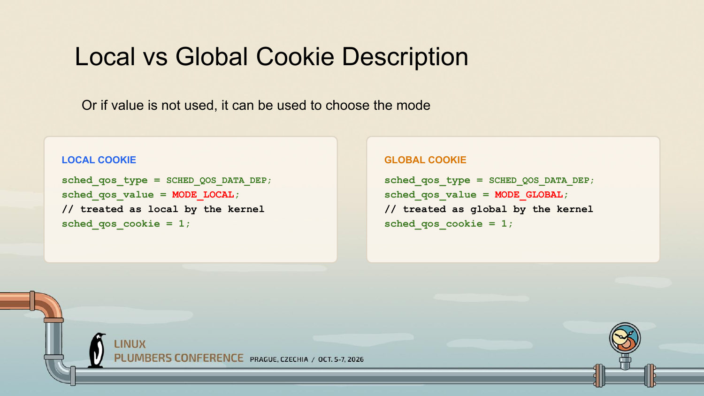
待决问题：每次 set/get 一次 syscall 的开销与批量化；跨进程的全局 cookie 由内核生成还是用户态管理；特性发现（内核支持哪些 QoS——靠错误返回还是专门接口）。
nohz_full / managed_irq 运行时化（Waiman Long，Red Hat）
背景：内核当前的 CPU 隔离只能静态配置（isolcpus={domain,managed_irq} + nohz_full 引导参数，对应 HK_TYPE_DOMAIN / MANAGED_IRQ / KERNEL_NOISE 三类 housekeeping），而运行时动态隔离（cpuset isolated partition）只支持 HK_TYPE_DOMAIN。目标：用同一套 cpuset isolated partition 机制扩展到另外两类。顺带的结构性事实：HK_TYPE_KERNEL_NOISE 旧由 TICK/TIMER/RCU/KTHREAD/WQ/MISC 组成，其中 WQ 与 KTHREAD 已并入可运行时变更的 HK_TYPE_DOMAIN。
方案思路：复用 CPU 热插拔代码——把要改隔离属性的 CPU 逐个下线 → 修改 HK cpumask → 重新上线。关键抉择在下线深度：若系统里没有已隔离的在线 CPU，可以全下（CPUHP_OFFLINE）；但 CPU 走到 CPUHP_TEARDOWN_CPU 时 stop_machine 会冻结所有其他在线 CPU 直到下线完成——对已有预隔离 CPU 的系统这是延迟尖峰。因此有预隔离 CPU 时只能下到 CPUHP_AP_ONLINE_IDLE：TICK/TIMER/MANAGED_IRQ 的工作都相对容易在该状态完成；HK_TYPE_RCU 例外——它必须全下才能生效。提案因此把 RCU 从 KERNEL_NOISE 拆出独立管理，并提供「无视延迟尖峰强制全下」的选项；另一条路是用户直接用 rcu_nocbs 引导参数预先划出 no-callback CPU。
效果与后续：无实测数据（设计提案）。未来工作：HK_TYPE_MISC 及各子系统引导期的 ad hoc HK mask 使用需要 notifier 化才能响应运行时变更；让 RCU 不下线 CPU 也能改 rcu_nocbs mask。
GPU Job Scheduling（Daniel Almeida/Collabora，Philipp Stanner/Red Hat）
背景：drm_sched 的本质是「每个 ring 一个 entity 调度器 + 依赖管理 + 超时处理」，不能像 CPU 调度器那样打断任务。代码库现状被总结为 "My God, it's full of race conditions!"（2024: A Kernel Odyssey）——竞态、锁不一致、dma_fence 信号、引用计数、未定义生命周期。更根本的变化：现代 GPU 没有硬件 ring 了，只有任意数量的固件 ring——「调度器不再是调度器」，内核几乎失去了对任务优先级的控制。
方案：drm::JobQueue——所有 job 放进一个 XArray，阶段迁移（Waiting ForDeps → Waiting ForExec → Done）是 O(1) 的游标推进；明确定位「不是调度器：只跟踪依赖与生命周期，固件决定运行什么」。开放方向：可抢占固件 ring、每 ring 固件优先级、新组件 drm_dep。
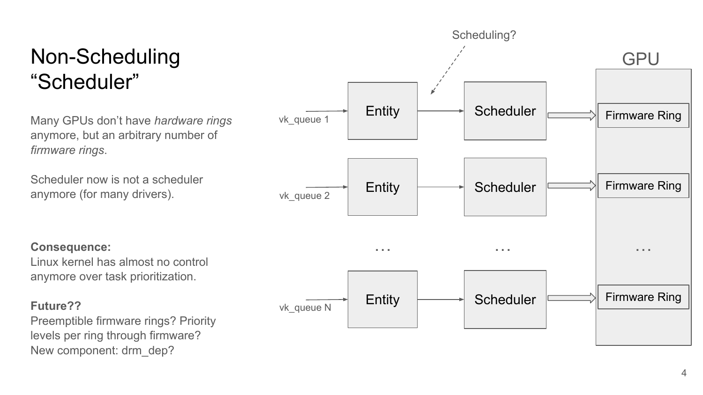
Proxy Execution 双场：用户态 futex 与 sched_ext 兼容
Proxy Enabled Futexes：FUTEX_LOCK_PING（Suleiman Souhlan & John Stultz，Google）
背景与场景：Android 的 FOREGROUND/BACKGROUND 任务模型下，任何对 BACKGROUND 的限制（cpu/cpuset cgroup、SCHED_IDLE）都会打开优先级反转——BACKGROUND 拿了内核锁被抢占，FOREGROUND 只能等它再跑起来放锁，这是 UI jank 的常见来源。ProxyExec 是广义 PI，让「限制 BACKGROUND」与「不伤 FOREGROUND」兼容。Android 落地状态：Android16-6.12 含完整 mutex 基础系列但默认关闭（引导参数可开，用 sched_ext 必须关）；Android17-6.18 已默认启用（含 rwsem 支持），vendor 实验中已有正面结果。上游时间线：6.13 prep v12 → 6.17 single-RQ v18 → 7.2 donor migration v29（PROXY_WAKING、proxy-migration、sleeping owner、proxy rwsem）→ sched_ext 支持（Andrea）→ chain migration & core sched → 本场的主角 Proxy Futexes。
问题：PE 只覆盖内核 mutex/rwsem；用户态锁的 FUTEX_WAIT 天生不公平（无 PI、可饿死）；FUTEX_LOCK_PI 只对 SCHED_FIFO/RR 做 boost，且严格 RT FIFO handoff + 禁止 lock stealing 带来性能问题——在非 RT 偏置（nice/cgroup）下，严格 FIFO 会把锁交给不重要的 SCHED_NORMAL 任务，比不用还差。
方案：FUTEX_LOCK_PING（"PI-NG，这名字赖 Rostedt"）——与 LOCK_PI 相似（写 TID、waiter 位、owner-died 位、内核乐观自旋），本质差异：内核与用户态都允许 lock stealing；允许空 owner 的 waiter 进入；用 Proxy Execution（而非 rt_mutex）做优先级提升 → SCHED_NORMAL 也有 PI；动态 handoff 规则防饿死。用户 API：
void futex_lock(uint32_t *mtx) { static __thread pid_t tid = gettid(); uint32_t oldval = 0; /* 无锁无等待者：直接拿 */ if (atomic_compare_exchange_strong(mtx, &oldval, tid)) return; oldval = FUTEX_WAITERS; /* 有等待者但无 owner：偷锁 */ if (atomic_compare_exchange_strong(mtx, &oldval, tid | FUTEX_WAITERS)) return; if (futex(mtx, FUTEX_LOCK_PING, 0, NULL) != 0) err(1, "FUTEX_LOCK_PING");}
效果（ping_bench，讲者自制工具）
| 反转场景 | FUTEX_WAIT | LOCK_PI | LOCK_PING |
|---|---|---|---|
| RT 任务反转（平均等待） | 2.70 ms | 0.00 ms | 0.00 ms |
| NORMAL 任务反转（平均等待） | 0.32 ms | 1.69 ms（更差） | 0.00 ms |
PI futex 在 NORMAL 场景反而放大反转（严格 FIFO 把锁交给低重要度任务），PING 两个场景都归零。
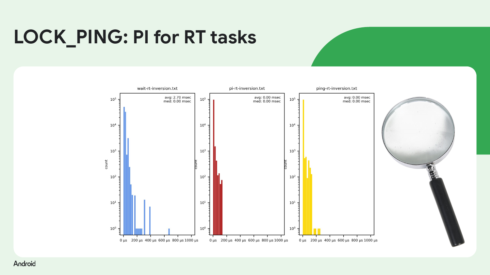
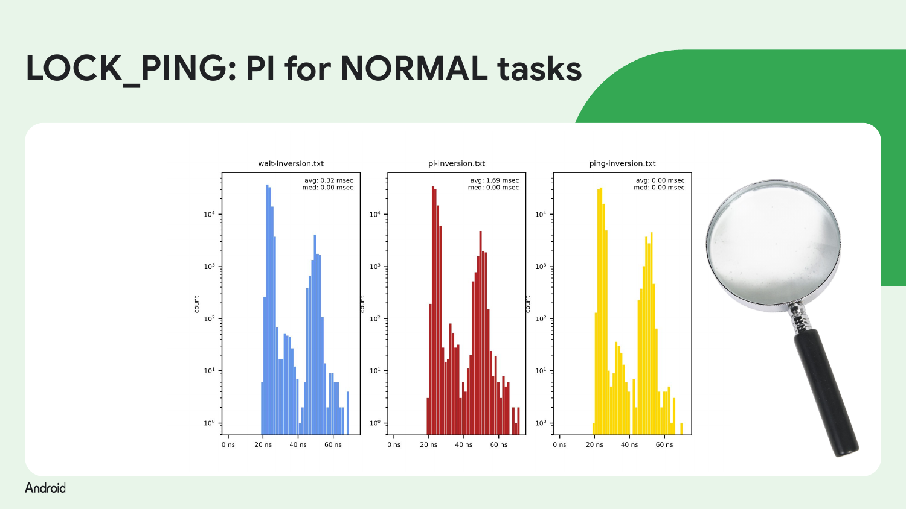
TODO 与讨论：调优 handoff/乐观自旋（平衡均值与最差时延）；与 proxy-rwsem 共用 proxy-lock 抽象一起上游；Android LTS-next 集成 + 回合。现场讨论点名：命名（"Better name? Please!"）、与 Waiman Long 的 TP futex 工作关系、PI futex 代码重构 vs 全新 PING 实现（rt_mutex 需要 proxy 大改）。
Making proxy execution compatible with sched_ext（Andrea Righi/NVIDIA，John Stultz/Google）
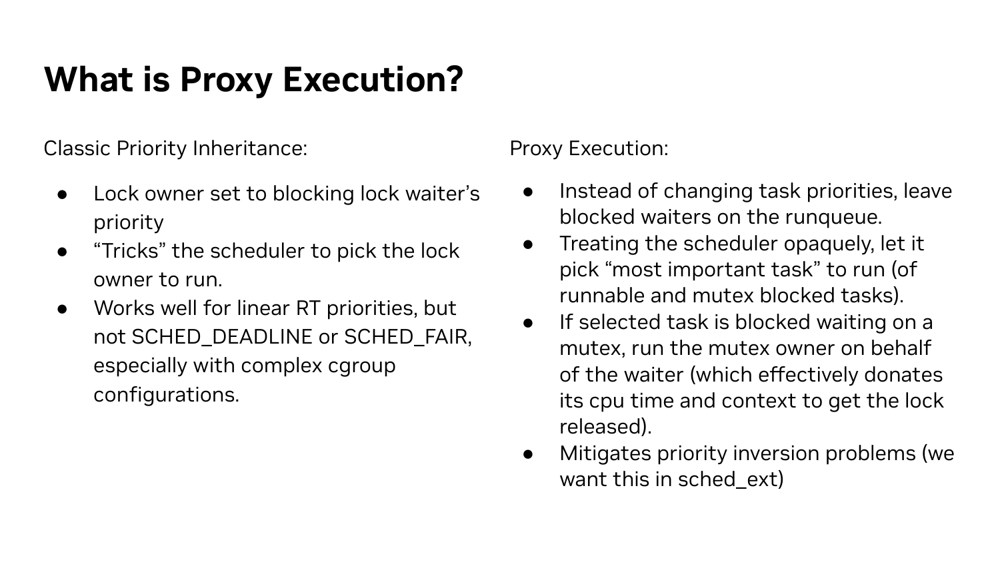
问题：CONFIG_SCHED_PROXY_EXEC depends on !CONFIG_SCHED_CLASS_EXT——发行版无法在同一个内核里同时提供两个特性。技术根源：sched_ext 的回调、kfunc、slice 与记账传统上跟随 rq->curr，而 proxy execution 需要它们跟随 rq->donor；且 PE 的代理迁移会与 BPF 的 remote-DSQ 转移及放置决策竞态。LPC 2025 已有原型证明可行，开放问题是「PE 由调度器核心还是 BPF 调度器控制」。
方案：把 PE 做成 per-BPF-scheduler 的显式 opt-in——设置 SCX_OPS_ENQ_BLOCKED 后开始接收 blocked donor：
void BPF_STRUCT_OPS(enqueue, struct task_struct *p, u64 flags){ /* @p 是 blocked donor 吗？ */ if (flags & SCX_ENQ_BLOCKED) scx_bpf_dsq_insert(p, blocked_dsq, slice, SCX_ENQ_PREEMPT); else enqueue_normal(p, flags);}SCX_OPS_DEFINE(scheduler_ops, .enqueue = (void *)enqueue, .flags = SCX_OPS_ENQ_BLOCKED);
BPF 调度器自行决定 donor 的 DSQ/CPU/顺序/slice/抢占策略；donor 被选中时，proxy-exec core 透明地沿 owner 链执行；BPF 只观察和记账 donor，owner 对其调度策略隐藏。工作流：W 在 O 持有的 mutex 上阻塞 → core 先切 idle → ops.stopping(W) → ops.enqueue(W, SCX_ENQ_BLOCKED) → BPF 派发 W → core 选中 W、解析出 O、迁移 W（rq->donor = W | rq->curr = O）→ O 用 W 的调度上下文执行。效果演示为 scx_cosmos 关/开 PE 的对比视频。
开放问题：API 对 BPF 调度器是否完备；sub-scheduler 场景（donor 属调度器 A/cgroup A、owner 属调度器 B/cgroup B——现契约：donor 调度器控制调度上下文，owner 可在 owner 调度器策略与同意之外执行）；NOHZ_FULL 上保守重启周期 tick（remote NOHZ tick 假设执行与调度上下文相同，donor-aware 化留作后续）。
sched_ext 中的 RT 任务（Qualcomm）
背景与问题：Android 帧路径的 RT 占比实测
| 场景 | FPS | RT/总任务 | cluster 内 RT 负载 |
|---|---|---|---|
| 王者荣耀 | 120 | 53/443（11.96%） | 24–57%（均值 45.5%） |
| 和平精英 | 165 | 29/202（14.36%） | 41–56%（49.2%） |
| 崩坏：星穹铁道 | 60 | 26/158（16.46%） | 16–51%（42%） |
| 腾讯视频 | 60 | 41/771（5.29%） | 13–42%（28.2%） |
| BiliBili / TikTok 直播 | 30 | 9% / 11.4% | 27.1% / 13.9% |
RT 任务是帧渲染管线的一等公民（SurfaceFlinger 97/98、Display HAL 97、GPU/Adreno 49），FPS 越高 RT 负载越重。三个具体问题：① 干扰——关键游戏任务（UnityMain/UnityGfxDeviceW）被 SurfaceFlinger/binder RT 抢占、cache miss、唤醒延迟，多帧连续掉帧；② 联合均衡缺失——TikTok 场景 2 个 RT + 6 个 FAIR 任务同帧周期、负载相近，三个 CPU 却利用不佳；③ schedutil 输入不稳——RT util 波动 15–45%、cpufreq 在场景快结束时才抬升，按帧窗口对齐的 util 模型才能给 governor 稳定输入。
方案思路：控制边界
两条路线：选项一扩展 sched_ext 感知 RT 任务（sched_ext 管理 RT）；选项二扩展 RT 调度器感知非关键 CPU（把 RT 分裂到跑非关键任务的 CPU 上，关键 CPU 保持无 RT——抢占消失、其余任务放置自由，RT 优先级与 PI 语义不变）。提案的边界划分：把帧路径 RT（SurfaceFlinger/Display HAL/GPU）移入 sched_ext，内核安全域（watchdog、migration、IRQ 线程）留在原生 RT class 之外。开放问题：prio > 50 的 RT 是否都准入？优先级 49 的 IRQ 线程收不收？sched_ext 启用期间临时把 RT 转 fair 再恢复是否安全？以及「如何走向上游、避免 Android vendor hook」。
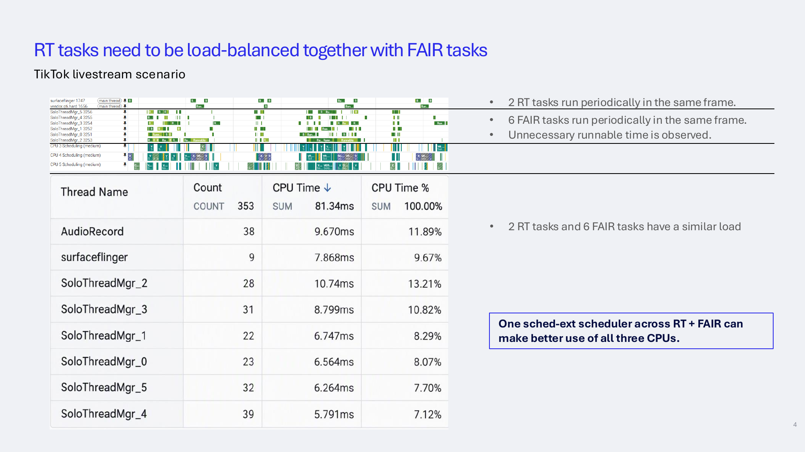
pvsched v3：跨 VM 边界的调度透传
背景与问题
ChromeOS 的共享租户 VM（在 Android VM 里跑 Android 应用）：一个 VM 里混合优先级的任务，交互负载（音视频）需要无卡顿的高优先级调度，而 host 不知道 guest 内部谁重要。相关工作有 IBM 的「guest 避开被重抢占的 vCPU」提案与 Phantom Tracker（经 IVSHMEM 调 OpenMP）。
方案：三代演进后的 v3 架构
V1（2023/12 LKML）KVM 包办握手/策略/决策——上游反对这些逻辑进 KVM；V2（LWN 968242）KVM 只做握手、策略放内核模块或 BPF——KVM 维护者连握手都不想放内核；V3（准备上游）：握手放 VMM，策略放 BPF 程序。五个组件：
- pvsched_guest 驱动（guest 内核模块）：挂
sched_switch/irqtracepoint，直接把调度优先级与执行上下文写进共享内存； - 共享内存页：每 vCPU 一个 4KB 页（Header + Guest 写状态区 + Host 读状态区）；
- 虚拟 PCI 设备（VMM 模拟）：BAR0 为控制 MMIO doorbell、BAR1 为 GPA 表；
- host 侧 pvsched 模块：pin 住 guest 页、提供安全的 boosting 辅助、严格强制反饿死定时器；
- eBPF 策略引擎：经 BPF struct_ops 或 tracepoint 接入，按共享状态动态调整 vCPU 优先级。
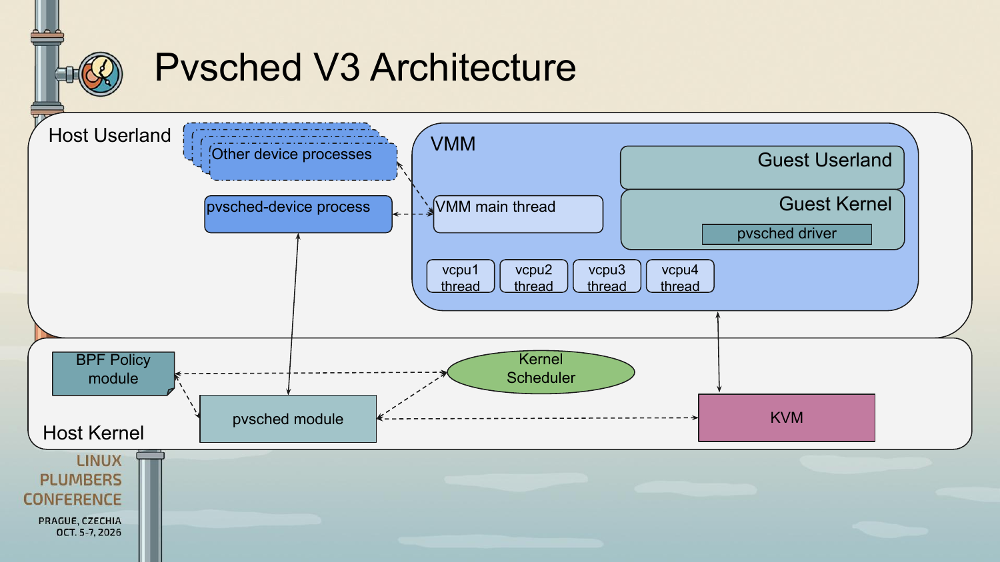
与 sched_ext 的双向集成——host 侧策略：不抢占敏感 vCPU（guest IRQ、高优 guest 线程）、gang schedule vCPU、预 staging 目标 guest 线程、为 boost/deboost 临时打破 cgroup 抽象、按 VM 内部动态负载权重调整 VM 吞吐；guest 侧策略：CPU funneling（负载均衡推向物理在 CPU 上的 vCPU）、高载下最小化 vCPU spread、跟随 host hints 选择调度哪些线程。
效果（backup 数据：2-vCPU VM cyclictest，vCPU 绑核 + 每核 stress-ng）
| 平台 | p99 无 pvsched | p99 有 pvsched | ≥1ms 样本数 |
|---|---|---|---|
| Intel N150 裸机 | 1.15 ms | 37–41 µs | 672–828 → 0–8 |
| Ryzen 6900HX 裸机 | 1.3–1.8 ms | 30–37 µs | 954–1083 → 2–4 |
| Intel 嵌套虚拟化 | 1.3–1.8 ms | 41–76 µs | ≈850–1000 → 0–6 |
展望 pvshmem：复用这套内核↔guest 传输层做更广的策略通信，第一个目标是 OOM kill——host 做全局 victim 选择、只杀 VM 内单个 job 而不是整个 VM（guest 暴露 memcg 信息，eBPF 策略接入中）。
LAVD：锁抢占时延（LHP/LWP）与粘性调度
Taming latency spikes: LHP & LWP（Changwoo Min，Igalia）
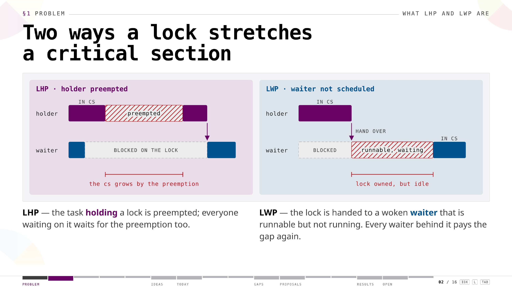
背景与场景：Steam Frame VR——头显用自身相机做头部追踪，每相机帧一个 deadline：30Hz 相机、33ms 预算、7–8ms CPU 工作，错过则掉帧出现 judder；实测有一帧跑了 64ms。管线拆解：camera poll → preprocess → dispatch → tracker → keyframe，每级在 futex 上睡等前一级唤醒（condvar、mutex、SysV 信号量）——tracker 一帧内三次成为「被唤醒的等待者」，每次 runnable 后等 2–16ms 才跑（LWP），叠加中间被抢占 ~5.1ms（LHP），三次 LWP 直接打爆 33ms 预算。「两者都不体现在平均 CPU 使用率上，都体现在尾部」——游戏/VR 掉帧 stutter，服务端 lock convoy、P99 尖峰、请求管线尾延迟。

现状地图（slide 10）：内核锁 LHP——只有 lazy preemption，不感知锁；proxy execution 覆盖 mutex、sched_ext 侧需要 donor 策略。用户锁 LHP——TSE（7.0 opt-in，rseq 申请 5–50us、syscall 即止、glibc 未支持）与 LAVD 的 futex LHP（futex_wait() 返回 0 推断持有者、一次性 latency-criticality boost，误报：condvar 与空闲池）。LWP 两侧全空——这是本场的核心缺口。
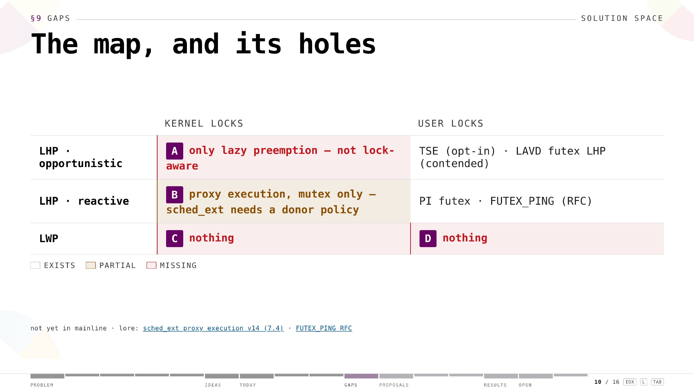
三个提案：
/* kernel: 锁在 init 时登记（RFC） */mutex_init(&cgroup_mutex);mutex_track_holder(&cgroup_mutex);/* 持有时 current->nr_tracked_locks++，释放时 --，BPF 可读 *//* scheduler: 每轮多给一次机会 */if (!prev->granted && prev->nr_tracked_locks > 0) { prev->granted = true; extend(prev); /* 上限 1 tick */}
void enqueue(p, enq_flags) if (enq_flags & SCX_ENQ_BLOCKED) { o = owner(p->blocked_on); cpu = runnable(o) && allowed(p, cpu_of(o)) ? cpu_of(o) : prev_cpu(p); boost_lat_cri(p); insert(p, LOCAL_ON | cpu, PREEMPT); }
SEC("fentry/__futex_wait") set_flag(current, LOCK_WAITER);SEC("tp_btf/contention_begin") if (!(flags & LCB_F_SPIN)) /* 将睡眠 */ set_flag(current, LOCK_WAITER);void enqueue(p, enq_flags) if (has_flag(p, LOCK_WAITER)) boost_lat_cri(p); /* 更早的 deadline */ clear_flag(p, LOCK_WAITER); /* one-shot */
效果：Steam Frame 实测（60 秒游戏内 >2ms 的调度延迟计数）
| 游戏 | LAVD 修复前 | LAVD + LWP |
|---|---|---|
| Ghost Town | 2,780 | 140 |
| A Hat in Time | 880 | 120 |
| Sekiro | 6,740 | 2,360 |
| Eleven Table Tennis | 1,050 | 140 |
修复后一小时游戏内无大 tracker 尖峰；幻灯片并给出 EEVDF 对照（比修复前的 LAVD 更差）。开放问题：调度器需要知道什么（持有/等待/被延期状态放 task_struct 还是 rseq）、怎么采集（全锁改内核 vs 精选锁、既有 contention tracepoints 的不精确记账、libc 经 rseq 共享、跟踪锁相关 syscall 会漏快路径）。
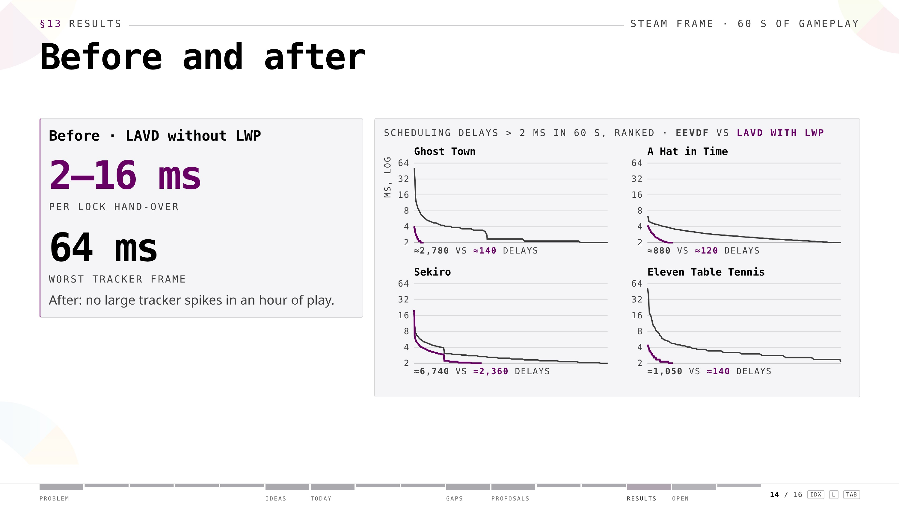
Stickiness：让任务保持 cache 温热（Gavin Guo，Igalia）
背景与问题：work-conserving 调度器（含 lavd 的 select_cpu()）醒来总挑 idle core——把「空闲」排在「cache 温热」之上，于是更多迁移、任务变 cache-cold、L1/L2/TLB 反复重填。cache 敏感负载（如用路由表当内存 KV 的边缘路由器）为每次迁移付全局代价：重填逐出其他 cache 行、争用加剧、尾延迟被推高。核心决策是 wait(A) 还是 migrate(B)——两者都不可观测、都是预测，且等待期间 X 还在继续逐出 T 的行。
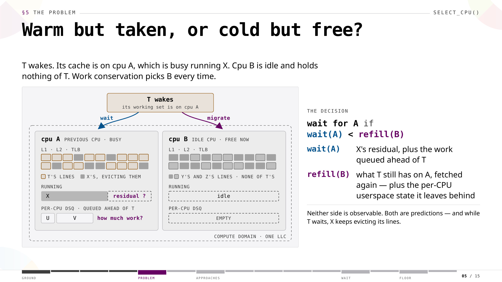
方案谱系（三种既有方案 + 一个增强）：
- SIS_CACHE（Chen Yu，Intel，2023，未合入）：短睡眠者离开后让 CPU 为其保温「平均睡眠时长」，其他唤醒者的 idle 搜索跳过它；「是定时器不是锁——不存 owner」。
- Task warmth（David Dai，Meta，scx#3714，2026-07）：prev CPU 空闲、或预测等待（停机时间 + nr_queued × avg slice）落在任务「热度」可拉伸至 2× 的预算内则等待，否则迁移重填。memcached 实测：收益在 warm-cpu-us 10–20µs 处进入平台期，50µs 开始衰减。
- Look-ahead（Gavin Guo，未上游）：CPU 消费共享 domain 队列时越过队头向后看几个任务，按 deadline 递增序找仍在本 CPU 温热的任务拉进 per-CPU 队列。
- Completion-time 定价（Changwoo Min，PR #3806）：「数排队不是计时」——把 wait 从「计数 × 平均」改为按每个排队任务自身服务时间计价。
/* 今天 (5699c7f08582)：per-CPU DSQ、计数 × 平均 */wait = (est_stopping - now) + nr_queued * slice_wall/* Changwoo 增强 (80eabdc60198)：按时间定价 */wait = residual(running) + queued_service / capacity

开放问题（问全场）：L1/L2/TLB 状态在忙 CPU 上到底存活多久？内核能否暴露 residency 信号（PMU 计数器、cache occupancy——Intel RDT / Arm MPAM 能否 per-task？调度决策频率下读得起吗？）；一次迁移对特定任务值多少时间；调度器 ↔ 用户态（分配器 per-CPU cache 才是迁移的真正受害者——该它们向调度器提示局部性，还是调度器向它们暴露 warmth？）。
scx-cosmos：闭合 GPU 局部性反馈环
背景：CPU 与加速器的局部性越好性能越好。现有 scx_cosmos 用 NVML 观测把 GPU 负载放到靠近其 GPU 的 CPU 上，但依赖 NVIDIA/NVML 特定的用户态轮询、且看不到负载的 host 内存放置。
方案：六阶段反馈环，一个有界动作——加速器调用 → BPF hint（设备 0 → node 0）→ SCX 放置（或 NUMA balancing）→ telemetry（remote access 计数，可选）→ workload move_pages()（可选）→ feedback（带宽 + 事件）。「BPF 只建议；用户态或内核态执行；地址生命周期所有权留在 workload。」需要的内核改进：sched_ext 任务的 NUMA access tracking 与 preferred memory node 表达（即 Andrea 的 sched_ext NUMA 系列）、设备-进程关联。

| 组件 | 实现 | 职责 |
|---|---|---|
| GPU 程序 | C++ LD_PRELOAD | 发布每线程一个 NUMA 节点提示 |
| 调度器 | SCX BPF + Rust | task-storage hint，偏好 GPU 节点上的允许 idle CPU |
| Telemetry | BPF + Rust，6 个 pinned core PMU 事件 | per-task/TGID 总量与增量 |
| 决策 | CUDA C++ workload | REMOTE_ACCESS / 指令数，完整区间 + 标定阈值 |
| 动作 | move_pages(MPOL_MF_MOVE) | 仅普通未注册页 |
效果
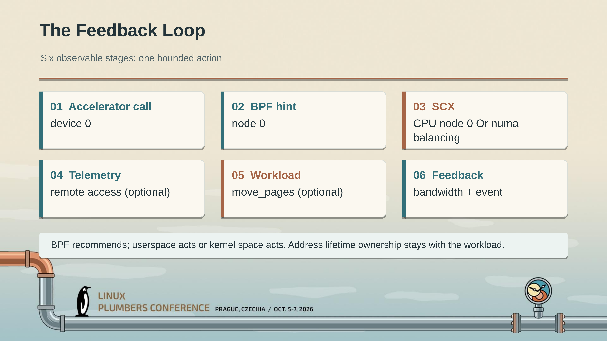
分工哲学：调度器读 per-task GPU hint 选 GPU-local CPU 节点而不知道虚拟地址；应用知道分配类型、页范围、复用与迁移合法性，拥有地址感知的动作；带宽证据验证收益——覆盖不全或信号归一化值低则不迁移。
x86 能效：EAS 延迟分析与硬件压力
EAS on x86 Hybrid：延迟分析与 idle CPU 选择（Ricardo Neri）
背景：OSPM 2026 放开了 EAS 对 schedutil 的依赖（x86 可用），EAS 即将默认开启。EAS 把轻任务打包到更少的高能效核——省电但有延迟代价。问题：能否通过更激进地使用 idle CPU 来降低延迟代价？
方法：把唤醒延迟分解为三段——waking→wakeup（IPI + C-state 退出，<1µs 近常数）、wakeup→stat_wait（queue_wait：CPU 选择，主导项）、stat_wait→switch（PSI + trace 开销 + 抢占等待）；用 schbench 在 Intel hybrid（P 核 + E 核模块 + LP E 模块，共享 L3）上测量。
提案：cluster-local idle preference——find_energy_efficient_cpu() 做 per-PD（性能域）候选扫描后，若同一 cluster 内有 idle CPU 且它落在 best-energy 候选的 slack 容差内，就选它：用 per_cpu(sd_share_id) 得 cluster id、idle_cpus 位图做 O(1) 判断。效果是「拿一点点能量预算换显著延迟」。

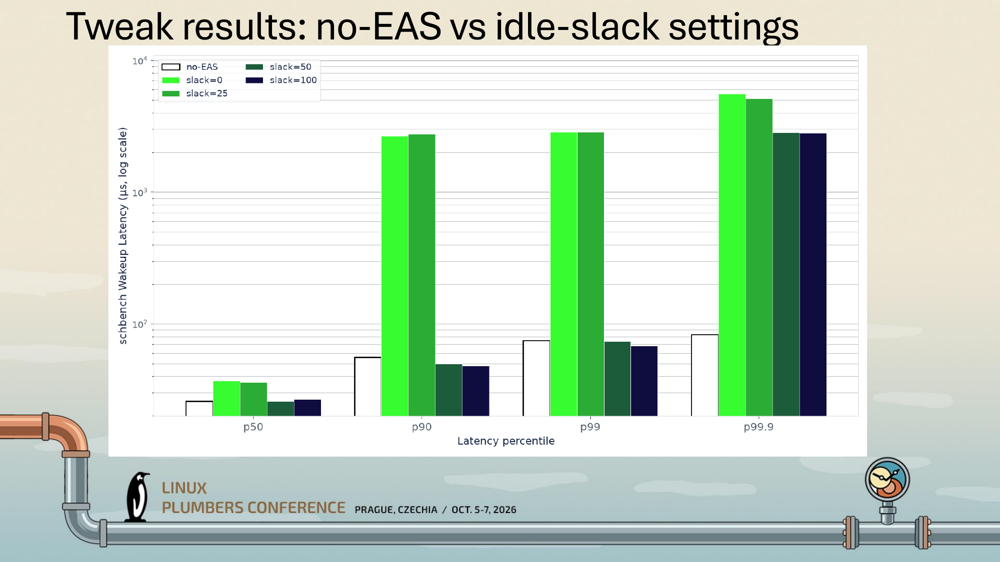
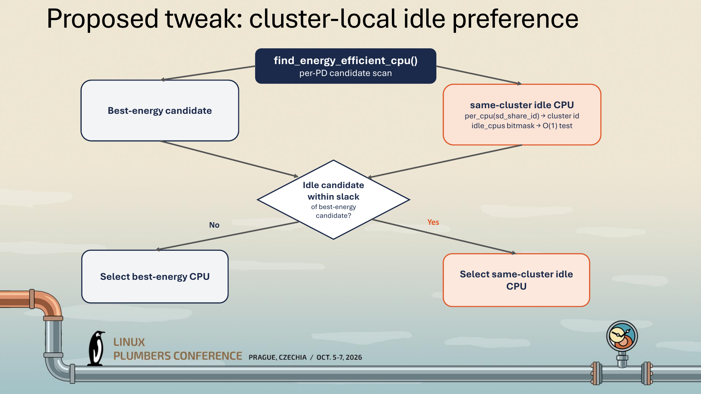
backup 数据点：queue_wait 主导（不是选择算法本身的成本）；ECDF 显示 p99 从 5622.5µs 降到 2825.5µs（该页图表）。另给出 idle slack 与 EEVDF slice 时长的关系、真实世界 idle slack 分布。
Hardware Pressure on x86：调度器需要知道降频吗？（Ricardo Neri）
背景与问题：热限频、功率墙等「静默硬件压力」让 CPU 的真实容量偏离标称——而调度器（EAS / 负载均衡 / 唤醒路径）拿到的 capacity 不知道。已有的抽象：arch_scale_cpu_capacity()、hw_load、cpufreq_pressure 汇入 get_actual_cpu_capacity()。
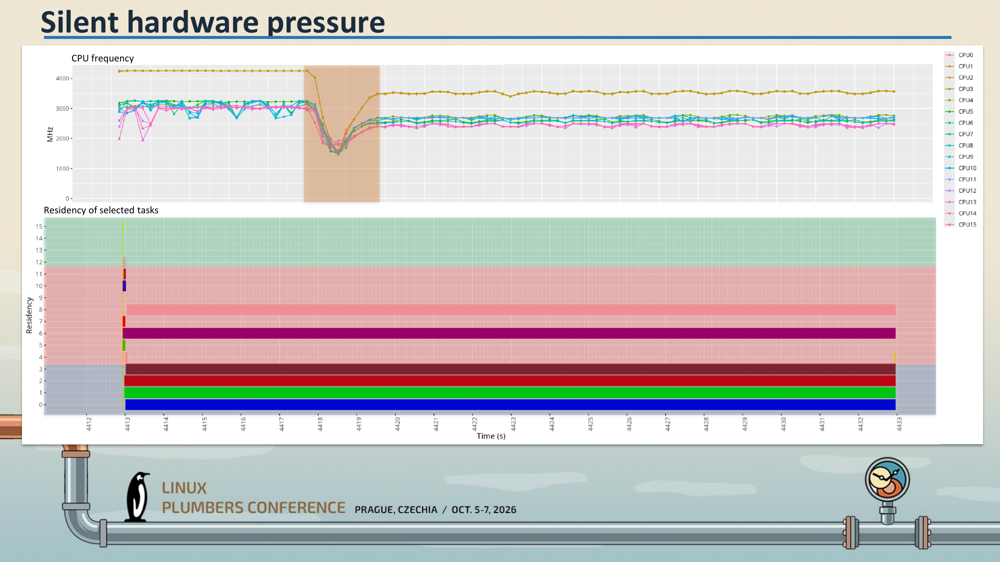
x86 的信号接线提案：调度器 tick → scale_freq_tick() → APERF/MPERF Δ → arch_scale_freq_capacity()；热中断 → therm_throt_hw_pressure() → 实时 hw_pressure；Power Limit Notification（PELT 衰减）→ cpufreq_pressure；三者经 hw_load 汇入 get_actual_cpu_capacity() 供调度器消费。
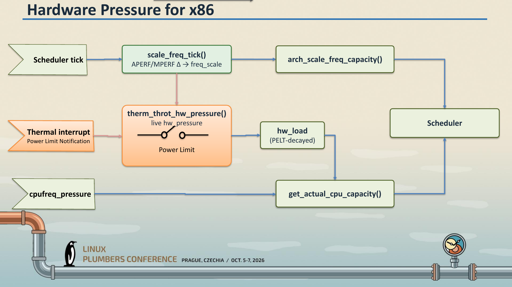
讨论（问全场）：这个问题值得解吗？信号源合理吗？接入点合理吗？backup：cpufreq_pressure 现已在 x86 非对称容量上工作；对 misfit_load 信号的影响有专门一页。
idle 退出延迟预测与唤醒成本摊销
Dynamic Runtime Prediction of CPU Idle-State Exit Latency（Qualcomm，Aiqun Yu & Cong Zhang）
背景与问题：硬件唤醒、固件恢复、内核执行共同构成 hrtimer 处理延迟——CPU 深睡后定时器「准点触发」实际晚了一个 exit latency。测量方法：在内核 resume 点记录，CPU 与 cluster 分开维护历史；有效样本要求定时器到期且唯一挂起（其他 CPU 无非定时器 IRQ）；预测用滑动窗口均值（CPU C4 / Cluster CL4 / CL5 三档分别拟合）。
方案：Rooster timer 补偿——每 cluster 一个 rooster 定时器 IRQ，提前一个预测的 exit latency 触发，让内核在原 deadline 附近 resume；idle 的最后入眠 CPU 负责为最早唤醒者编程全局 frame；跨 cluster 场景用全局 rooster + IPI（advance = 首跳唤醒路径 + 目标 exit latency）。架构定时器在 idle 中停止，补偿量 = cluster exit latency + 目标 CPU exit latency（或跨 cluster 时的两个 cluster 之和）。
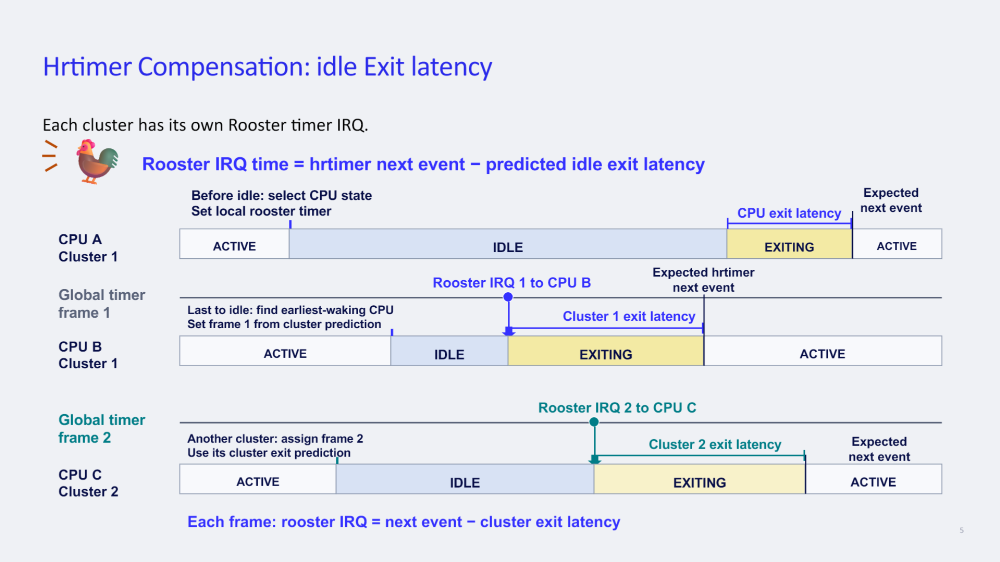
效果（t1−t0 绝对均值）
| idle 级别 | 补偿前 | 补偿后 |
|---|---|---|
| CPU C4 | 19.824 µs | 0.073 µs |
| Cluster CL4 | 61.991 µs | 0.191 µs |
| Cluster CL5 | 1929.767 µs | 10.738 µs |
开放讨论：性能/实时收益、rooster IPI 的开销与功耗、QoS 含义、能否用预测的 exit latency 反过来指导 idle state 选择。
Amortizing CPU Wakeup Costs（Samuel Wu，Google）
背景：设备功耗在睡眠态是楼梯、在活动期随利用率多项式上升；目标是压低静默态（低 CPU 利用但未挂起：息屏音频播放、非高峰服务器流量、一切空闲设备）的功耗地板。ftrace 时间线显示每次 idle exit/entry 都有开销——「子系统都学会批处理了（RCU_LAZY、timer slack、脏页回写），除了决定 CPU 何时醒来的那个子系统」。sched/fair.c 里的老注释佐证了缺失：打包小任务让其他 CPU 进深睡在能量上可能更好，「但当前 Energy Model 无从告知——CPU idle 功耗、cluster idle 功耗、转换成本都没建模」。
提案：free ride——把任务搭在已活动的 CPU 上，批处理最小化 idle 退出次数、摊销开销。
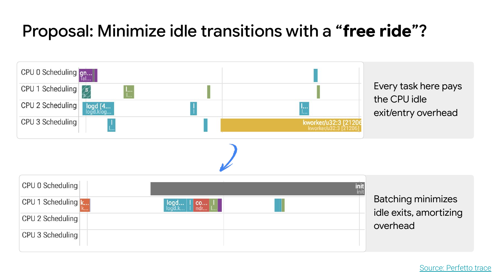
效果（Pixel 9，kernel 7.1，频率钉 FMin，n=90 拉丁方，相对 EEVDF 基线 87.00mW）
| 配置 | 功耗 Δ | p95 延迟 Δ | idle 退出比 |
|---|---|---|---|
| m0 SCX 直通基线 | −0.14 mW | −160 µs | 109% |
| m1 懒批处理 + 紧急过滤 | −6.63 mW | +780 µs | 56% |
| m2 立即打包 Little cpu0 | −4.57 mW | +2530 µs | 64% |
| m3 cluster 内 + 懒批处理 | −6.44 mW | +800 µs | 57% |
| m4 Little 轮转 | −1.00 mW | +1560 µs | 112% |
| m7 找醒着的 Little | −5.99 mW | +5260 µs | 42% |
| m8 找醒/浅睡 Little | −6.61 mW | +5120 µs | 42% |
| m9 无过滤全懒批 | −6.70 mW | +1260 µs | 55% |
m1（普通唤醒进 LAZY_DSQ 不发 IPI、只由醒着的 Little 核排空；nice<0 紧急任务旁路立即 kick）拿到接近最优的功耗且延迟代价最小。核心洞察：「延迟不是批处理的代价，是唤醒时刻就提交 CPU 的代价」——唤醒时提交 +5120µs，switch-in 时提交 +780µs。idle 退出数与省电确实相关（散点图），存在一个功耗最小且延迟可接受的启发式。
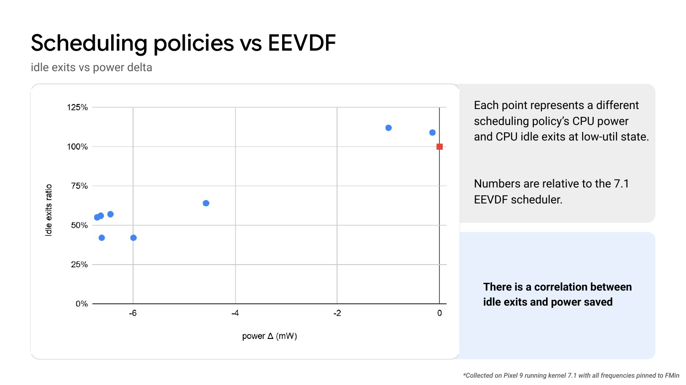
开放问题：EM 是否应暴露 idle-exit cost 项（现只知活动 OPP，不知 idle OPP/C-state 退出能量）；cluster 打包 vs CPU 打包何时该作为启发式（util 低、已在 FMin 时）；per-cluster runqueue、RT 式 push-pull；如何分类 latency-tolerant 任务与场景（设备整体空闲即天然延迟宽容——QoS hint 的又一个用例）。
cpufreq：自主调速的两条路线
Autonomous CPU performance selection：hw_autonomous governor（Sumit Gupta，NVIDIA）
背景：即便平台启用了 CPPC Autonomous Selection，schedutil/ondemand/conservative 仍在持续计算需求并写 Desired hint；performance governor 也不保证 fmax（请求只是 hint，实际频率可低于策略最大）。提案：新增 hw_autonomous governor——硬件直接选性能档、不发 Desired 请求，每个 cpufreq policy 独立选择；省掉 governor 计算与 Desired 写入，PCC 平台还能省固件邮箱命令（未实测）。驱动模型：保持 target() 模型，cppc_cpufreq 为首个驱动，intel_cpufreq/amd-pstate 为潜在后续；intel_pstate/amd_pstate_epp 的 active setpolicy() 模式不在本提案内。新增 struct cpufreq_driver 回调 prepare_perf_control()（前一 governor 停止后、新 governor 启动前：无 Desired 的选择启用 + MIN/MAX + EPP/Activity Window）与 set_policy_limits()（启动后与限值变化时更新 MIN/MAX）。兼容性：auto_select 为 0 时 hw_autonomous 拒绝；EPP 接口沿用 energy_performance_preference 四个命名预设（对齐 amd-pstate）。讨论：新 governor 是否是正确接口？回调切分是否合理？与可写 auto_select 如何共存？
EPP-boost：游戏负载的频率Scaling（David Vernet，Anthropic，Gaming MC）
背景与问题：Steam Deck（Van Gogh）跑 Civ VI，忙核中位频率只有 2.43GHz（fmax 3.5GHz），58% 样本低于 90% fmax——短 futex 睡眠（约 63 次/秒）会重置固件的需求估计，唤醒时从 1.70GHz 重新爬升（2.80GHz at wake、1.25ms 后才到 3.50GHz）。代价出现在帧时间尾部与加载时间，不在平均 fps。sysfs 直接设 EPP=performance 能提 1%-low 16%，但常开不合算。
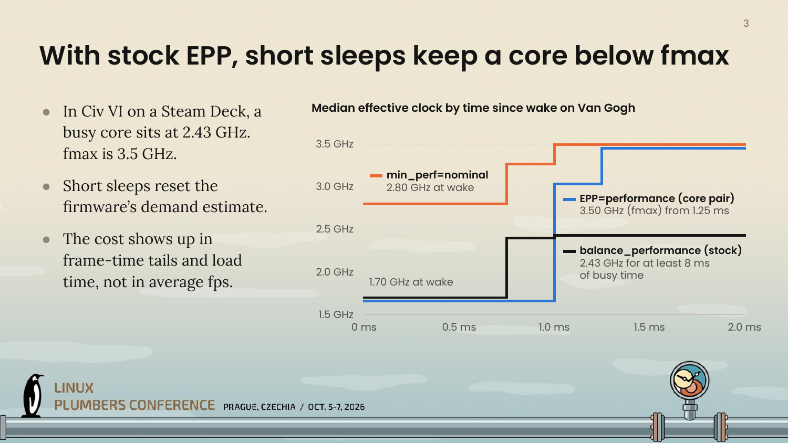
RFC 现状与重审要求：原 RFC 每 10ms 采样 C0 residency、50% 忙则设 EPP=performance（300ms 衰减）——Civ VI 1%-low +29~38%（p≤0.014）、忙时整机 +1.0W；AMD 维护者要求重构成：无模块参数、不覆盖用户设定的 EPP、governor 级机制而非驱动 heuristic。对比数据：
| 模式 | 最差 1% 帧时间 | p999 帧时间 |
|---|---|---|
| balance_performance（stock，active） | 70–73 ms | 75–77 ms |
| epp_boost RFC（active） | 63 ms | 76 ms |
| dynamic min_perf floor | 59 ms | 86 ms |
| schedutil（guided） | 47 ms | 51 ms |
| schedutil（passive） | 69 ms | 79 ms |
| UCLAMP_MIN（render 线程） | 67 ms | 76 ms |
guided 尾部最好但常开多耗 0.6–0.9W（轻载也如此），RFC 至多多 0.2W。提案：让动态 governor 驱动 EPP——「schedutil 设的是频率（min_perf 地板），EPP 要的是 QoS（偏好而非频率）；调度器看不见 GPU 功耗，固件看得见整机预算」。掌机上 CPU/GPU 共享一个功耗预算，guided 全程越权，提案结合 guided 的 governor 与 active 的 hint：策略留在 cpufreq、功率仲裁留在固件。附带讨论：Wine 线程提示——游戏标记重要线程、Wine 映射成 nice、cpufreq 看不见；改为 UCLAMP_MIN（原型在 7950X 上砍 41% 工作时间）并传导到 EPP，OpenXR 在 VR 头显已有先例。
Meta 机群隔离观测：锁跨越一切隔离边界
背景与问题
排查共享资源竞争（CPU/内存/IO——排除：专用 CPU、低 IO）之后锁定真凶：内核锁跨越一切隔离边界——cgroups、cpusets、nice、cpu.max 都拦不住；锁持有者卡在 reclaim、嵌套锁睡眠、runnable 态等待 CPU、RCU 等待。
工具：runnable_lock_monitor.bt
bpftrace 脚本，挂在 mutex/rwsem/percpu-rwsem（写）锁与解锁上；解锁时若已有等待者排队且出现一次 ≥5ms 的 off-CPU 区间则上报；报告含锁类型、持有时长、睡眠时长、ready-but-not-running 时长、取锁与离开 CPU 两个栈、CPU 集合。Strobelight 在轮换采样的主机上运行（全量跟踪太贵）。限制：计数是下界（比较占比而非绝对值）；只覆盖睡眠锁（不含 spinlock/rt_mutex/trylock）。
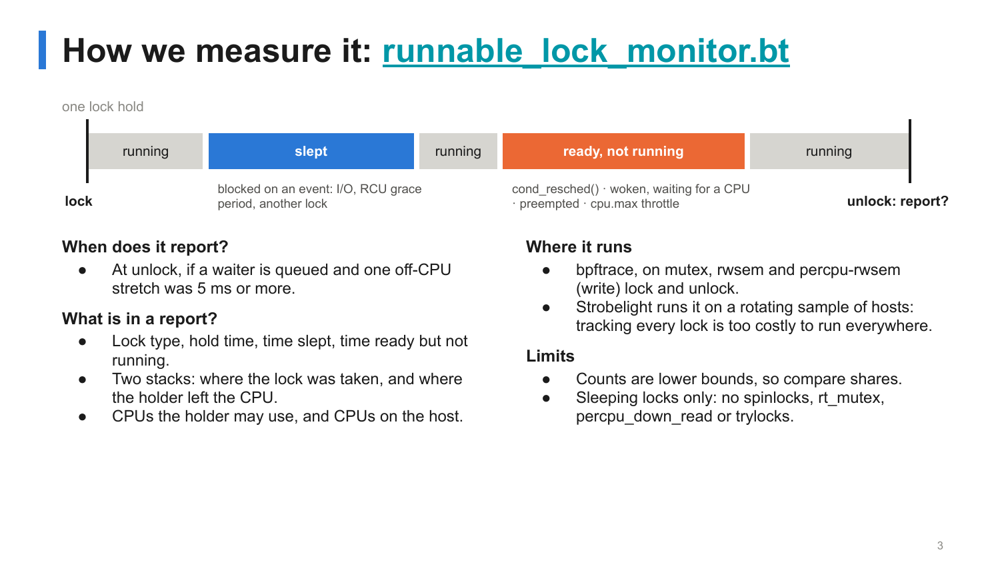
效果：28 天机群数据（2026-08-28 ~ 09-25）
那 9% 的 ready-but-not-running「大多是 cond_resched() 与唤醒后等 CPU，而非限流」——这一段正是调度器的隔离问题，与 LAVD LWP、nohz_full 动态化两个讲题指向同一缺口。
| 共享锁 | 共享范围 | 报告数 | 持有者在干什么 |
|---|---|---|---|
| btrfs b-tree node | 文件系统 | 608K | 69% 在树根：容器工具的树搜索 |
| rtnl_mutex | 整机 | 483K | ethtool ioctl（92%）：348 个程序在轮询 NIC 统计 |
| rdtgroup_mutex | 整机 | 320K | 读 resctrl 计数器（100%）：两个监控 agent |
| invalidate_lock | 块设备 | 105K | 某存储服务的 discard ioctl，小 cpuset |
| uprobes_mmap_mutex | 整机 | 84K | 带 uprobe 二进制的 exec/munmap：健康检查 |
| cgroup_mutex | 整机 | 57K | rmdir 32% / cgroup.procs 写 32% / mkdir 28% |
| XFS realtime bitmap | 文件系统 | 45K | 钉在一个 CPU 的 inode-GC worker 释放文件 |
sparsemask：缺失的通用管道
背景：全局 cpumask（如 nohz.idle_cpus_mask）是大机器上所有核争写的共享 cacheline 集合。谱系致谢：Steve Sistare 的原始 sparsemask（Oracle）→ Peter Zijlstra 的 x86 版 → 本系列的全架构扩展（另见 10 月分析的 SBM RFC v3 章节，13 补丁、7 个架构 enablement、首个用户 nohz idle 掩码）。「sbm 之于 sbitmap，如同 cpumask 之于普通 bitmap」：
struct sbitmap_word { struct sbm_leaf { unsigned long word; unsigned long bitmap; unsigned long cleared ____cacheline_aligned; raw_spinlock_t swap_lock;} ____cacheline_aligned_in_smp; } ____cacheline_aligned;struct sbm { struct sbm_leaf leaf[SBM_SIZE];}; /* 缩减到每叶一个 cacheline */
本场的增量：拓扑细节。SBM_SIZE 启动期由 CONFIG_NUMA / ARCH_SUPPORTS_SCHED_MC / CONFIG_HOTPLUG_CPU 三个维度决定（覆盖 arm64/loongarch/mips/powerpc/riscv/s390/sparc/x86 等的矩阵）。三个代表性坑：① PowerPC pSeries 热插拔可跨节点复用 CPU id（find_cpu_id_range() 回退到 NUMA_NO_NODE）——同一内核里 SBM_SIZE=1（每叶 4 CPU）或 SBM_SIZE=4（每叶 1 CPU）两种形态都得正确；② 通用 arch_topology 的 cpu_coregroup_mask() 要取 NUMA/core/LLC/cluster 兄弟的最小者；③ SRAT 中禁用的 APIC（loongarch/x86）回退方案：假定禁用 CPU 自成单例节点（SBM_SIZE/max_cpus_per_instance 各加 disabled_cpus）。x86 guest + 热插拔：QEMU/KVM 的 MADT 对未上电 CPU 也给出正确 APICID、拓扑一致——现场向其他 VMM 与架构征集反例。
wakeup 用法的数据格式：用 sbm 叶的前 8 字节——原子置位/清位、单次 u64 读可遍历 64 CPU；或把 CPU 散布到字节边界——非原子单字节 store（同 cacheline 的硬件优化）、但需要 gather 步骤拼全掩码。
效果（位操作最坏延迟，%cycles 相对全局掩码）
| 掩码形态 | %cycles | 加速比 |
|---|---|---|
| global mask | 100% | 1× |
| per-NUMA mask | 32.92% | 3× |
| per-LLC mask | 1.298% | 77× |
| per-LLC（u8 操作，无 LOCK 前缀） | 0.493% | 202× |
lore：最坏延迟分析数据来源；开放问题：Big Endian 上掩码拼接的字节序。
RT 工具与观测简报
timerlat vs cyclictest（Red Hat：Glozar/Kacur/Goncalves）16 页
两工具都测周期定时器延迟，差异在测量点：cyclictest 用户态侧，timerlat 内核侧（可带 kthread）。timerlat（用户模式）读数普遍偏大——「是 trace 开销、测量点不同，还是别的？都有点」。10 点分解（Intel PT 实测，µs）：
| 同步点 | cyclictest | timerlat |
|---|---|---|
| IRQ handler in | 1.274 | 1.423 |
| 线程唤醒 | 1.291 | 1.576 |
| 调度切换（thread latency） | 3.630 | 4.017 |
| wait syscall exit（cyclictest latency） | 4.788 | 5.920 |
| wait syscall entry（timerlat user latency） | 4.907 | 5.999 |
| timer start | 5.325 | 6.627 |
两工具间差值的三大来源：osnoise/trace 开销（每点 +0.1~0.4µs）、timerlat 各测量点之间的一段（+1.1µs）、clock_gettime 效应（+1.1µs）。
长期延迟监测（Jan Altenberg，OSADL）64 页
OSADL 的 RT Linux 长期延迟监测服务：从 1979 年 MC68000 的历史讲到现行方法——每 CPU 一线程、优先级 98、锁内存、200µs 间隔（cyclictest -m -S -i200 -p98），例：Min 2 / Act 5 / Avg 4 / Max 27µs；延迟直方图按内核版本/硬件归档。未来：延迟图附上下文信息、stress-ng 负载生成、接入 RTLA。
PREEMPT_RT：接口 up 事件如何破坏实时（Florian Bezdeka，Siemens）现场问题
动态 RT 工作负载部署：容器运行时承载 RT 负载，装应用时才做 CPU 隔离/IRQ 亲和/设备直通的重配置。痛点案例：网卡引导时未用（管理性 down），应用启用时 stmmac 驱动在 bring-up 中设置 IRQ 亲和 hint，覆盖了用户预设的亲和——而设备未 request_irq() 前根本无法预设。现有 API 缺陷：亲和只在 request_irq() 后可见（「未用」设备引导后隐藏）、新 IRQ 检测靠扫描（有竞态）、IRQCHIP_MOVE_DEFERRED 需要额外一次迁移。
生产 RT 内核的轻量 preempt/IRQ tracepoints（Wander Lairson Costa，Red Hat）10 页
客户环境不可预测延迟尖峰、实验室无法复现、生产禁自定义内核——需要安全低开销的生产环境 tracing 定位「长时间关中断/禁抢占」。方案：tracepoint 静态键内联检查（nop 跳转）+ __no_caller_saved_registers 与内联 asm 避免分支检查前的寄存器溢出（gcc 的 x86 实现）。静态开销：1,125 个函数分析，每调用点中位数 3 条指令。
收尾观察
- 锁驱动的时延是 2026 年的贯穿主题：Proxy Futexes 把 PE 从内核 mutex 推进到用户态锁（FUTEX_LOCK_PING，NORMAL 任务 PI 从「更差」到归零）；LAVD 用 LWP 补上锁交接的最后一段（Steam Frame >2ms 延迟 2,780→140）；Meta 的机群数据证明锁持有者 ready-not-running 是隔离失效的 9%。三个独立团队在同一个缺口上会师。
- sched_ext 生产化的最后几公里：Qualcomm 要求收编帧路径 RT 任务（5–16% 任务数、14–50% 负载）、pvsched 打通 VM 边界（cyclictest p99 1.15ms→37µs）、scx-cosmos 闭环 GPU 局部性（+67% 带宽）、PE 以 SCX_OPS_ENQ_BLOCKED opt-in 兼容——每一项都在回答「发行版/厂商为什么敢开这个开关」。
- 能效侧的信号化缺口：EAS 的延迟代价（cluster-local idle preference 用 slack 换延迟、能量几乎无损）、静默硬件压力（thermal/power limit 进 capacity）、idle exit 预测（CL5 补偿后 1929.8µs→10.7µs）、free ride（−6.6mW）——共同指向 Energy Model 缺 idle 功耗与转换成本项。
- 与 LKML 评审线的咬合：EEVDF 场即 Vincent 18 补丁系列的路线图；sparsemask 即 SBM RFC v3 的拓扑细节补充；PE×sched_ext 即 Andrea for-7.4 系列；scx-cosmos 依赖的正是 sched_ext NUMA 支持系列。跟踪这些 LKML 线程即可看到这些 talk 的下半场。